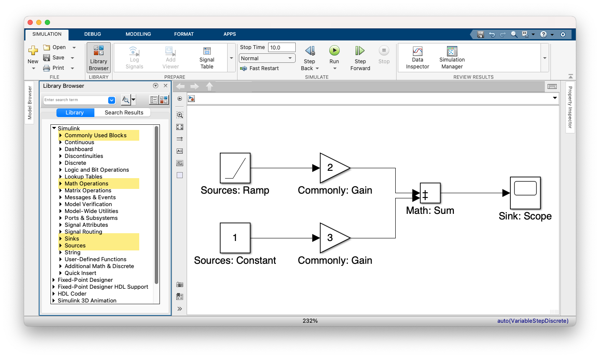

12.2 Simulink-Bibliothek#
Simulink stellt viele Blöcke zur Verfügung. In diesem Kapitel gehen wir die Liste der wichtigsten Blöcke durch. Darüber hinaus betrachten wir Ableitungen und Integrale.
Lernziele#
Lernziele
Sie kennen die wichtigsten Eingabe-, Verarbeitungs- und Ausgabeblöcke.
Sie können ein Eingangssignal ableiten und integrieren.
Eingabeblöcke bzw. Sources#
In der Simulink-Dokumentation finden Sie eine Übersicht der möglichen Eingabeblöcke für Simulink. Die folgende Liste und vor allem die Beschreibungen sind von dort übernommen. Eingabeblöcke, die häufiger in der Regelungstechnik gebraucht werden, sind fett gedruckt.
Band-Limited White Noise: Dieser Block erzeugt normalverteilte Zufallszahlen (weißes Rauschen).
Chirp Signal: Dieser Block erzeugt eine Sinusfunktion, bei der die Frequenz ansteigt.
Clock: Dieser Block gibt bei jedem Simulationsschritt die aktuelle Simulationszeit aus. Dieser Block ist nützlich für andere Blöcke, die die Simulationszeit benötigen.
Constant: Diser Block erzeugt ein reelles oder komplexes konstantes Signal. Verwenden Sie diesen Block, um einen konstanten Signaleingang bereitzustellen.
Counter Free-Running: Dieser Block zählt hoch und beginnt wieder bei 0, nachdem der Wert \(2^N+1\) überschritten wurde, dabei ist \(N\) die Anzahl der Bits
Counter Limited: Dieser Block zählt hoch und beginnt wieder bei 0, nachdem ein vorher festgelegter maximaler Wert überschritten wurde
Digital Clock: Dieser Block gibt ebenfalls die Simuationszeit aus, aber nur zu bestimmten Zeiten.
Enumerated Constant: Dieser Block erzeugt eine Aufzählungskonstante.
From File: Mit diesem Block laden Sie Daten aus einer MAT-Datei in das Simulink-Modell.
From Spreadsheet: Dieser Block liest Daten aus einer Tabelle.
From Workspace: Dieser Block lädt Signaldaten aus dem MATLAB-Workspace in das Simulink-Modell.
Ground: Dieser Block erdet nicht verbundene Eingangssignale.
In Bus Element: Dieser Block ermöglicht die Auswahl von Eingaben eines externen Ports.
Inport: Inport-Blöcke verbinden Signale von außerhalb eines Systems mit dem System.
Pulse Generator: Der Impulsgeneratorblock erzeugt in regelmäßigen Abständen Rechteckimpulse.
Ramp: Der Rampenblock erzeugt ein Signal, das zu einem bestimmten Zeitpunkt und mit einem bestimmten Wert beginnt und sich mit einer bestimmten Rate ändert.
Random Number: Der Zufallszahlenblock erzeugt normalverteilte Zufallszahlen.
Repeating Sequence: Dieser Block gibt ein periodisches skalares Signal mit einer Wellenform aus, die Sie mit den Parametern Zeitwerte und Ausgangswerte festlegen.
Repeating Sequence Interpolated: Dieser Block gibt eine periodische zeitdiskrete Folge aus, die auf den Werten der Parameter “Vector of time values” und “Vector of output values” basiert.
Repeating Sequence Stair: Dieser Block gibt eine Treppenfolge aus und wiederholt sie.
Signal Builder: Mit diesem Block können Sie austauschbare Gruppen von stückweise linearen Signalquellen erstellen und in einem Modell verwenden.
Signal Editor: Dieser Block dient der Anzeige, Erstellung und Bearbeitung von austauschbaren Szenarien.
Signal Generator: Dieser Block kann eine der folgenden vier verschiedenen Wellenformen erzeugen: Sinus, Rechteck, Sägezahn und Zufallsgenerator.
Sine Wave: Dieser Block gibt eine sinusförmige Wellenform aus.
Step: Dieser Block erzeugt eine Treppenfunktion mit zwei Stufen, der zu einer spezifizierten Zeit wechselt.
Uniform Random Number: Dieser Block erzeugt gleichmäßig verteilte Zufallszahlen in einem von Ihnen festgelegtem Intervall.
Waveform Generator: Dieser Block erzeugt wellenförmige Signale.
Ausgabeblöcke oder Sinks#
Mit den folgenden Blöcken erzeugen Sie Ausgaben oder exportieren Ergebnisse. Diese Liste enststammt der Simulink-Dokumentation.
Display: Dieser Block zeigt den Wert der Eingangsdaten an.
Floating Scope and Scope Viewer: Der Simulink® Scope Viewer und der Floating Scope Block zeigen Zeitsignale abhängig von der Simulationszeit an. Der Scope Viewer und der Floating Scope-Block haben die gleiche Funktionalität wie der Scope-Block, sind aber nicht mit Signalleitungen verbunden.
Out Bus Element: Dieser Block kombiniert die Funktionalität eines Outport-Blocks und eines Bus-Creator-Blocks.
Outport: Diese Blöcke verbinden Signale aus einem System mit einem Ziel außerhalb des Systems.
Record, XY Graph: Sie können sowohl den Block Record oder den Block XY Graph verwenden, um Daten im Workspace, in einer Datei oder sowohl im Workspace als auch in einer Datei aufzuzeichnen.
Scope: Dieser Block zeigt alle Signale an, die mit ihm verbunden sind.
Stop Simulation: Dieser Block stoppt die Simulation, wenn der Eingang ungleich Null ist.
Terminator: Dieser Block wird verwendet, um Blöcke zu kappen, deren Ausgangsports nicht mit anderen Blöcken verbunden sind.
To File: Der To File-Block schreibt Eingangssignaldaten in eine MAT-Datei.T
To Workspace: Dieser Block protokolliert die an seinem Eingangsport angeschlossenen Daten im Workspace.
Verarbeitungsblöcke#
Um die Eingabesignale zu verarbeiten, gibt es ebenfalls eine lange Liste von Blöcken, siehe Simulink-Dokumentation. Ein erstes Beispiel haben wir mit dem Gain-Block schon kennengelernt, der ein Eingangssignal verstärkt und mathematisch gesehen eine multiplikativer Faktor ist. Die Liste der Verbeitungsblöcke ist zu lang, um sie hier eingehend zu behandeln. Wichtig sind jedoch die mathematischen Blöcke zusammengefasst in dem Modul Maths Blocks und die sogenannten kontinuierlichen Blöcke aus dem Modul Continuous Blocks, das Ableitungen und Löser von Differentialgleichungen beinhaltet.
Beispiel: lineare Funktion als Eingangssignal#
Wollen wir die lineare Funktion \(u(t) = 2\cdot t + 3\) in Simulink modellieren,
so brauchen wir zwei Eingangssignale, nämlich \(t\) und \(1\). Daher ziehen wir
zuerst die Sources-Blöcke Ramp und Constant aus der Simulink-Bibliothek auf
den Arbeitsplatz. Die Eigenschaften beider Blöcke können durch Doppelklick
angezeigt werden.
Die Rampe ist eine Funktion, die Null ist und ab einem bestimmten Zeitpunkt
linear ansteigt. Sowohl der Zeitpunkt, ab dem der lineare Anstieg beginnt, als
auch die Steigung können eingestellt werden. Wir lassen die Voreinstellung
Start Time auf Null. Normalerweise müssten wir jetzt die Steigung, also
Slope auf den Wert 2 setzen, aber um den prinzipiellen Zusammenbau von Termen
zu zeigen, benutzen wir erneut den Verstärker-Block Gain.
Der Block Constant produziert ein konstantes Eingangssignal. Auch hier könnten
wir den Wert 3 direkt eingeben, indem wir einen Doppelklick auf den Block machen
und den Constant Value auf 3 abändern. Aber auch hier benutzen wir den
Verstärker-Block Gain.
Beide Terme müssen nach der Verstärkung mit 2 bzw. 3 noch summiert werden. Das
erledigt der Mathematik-Block Sum. Die beiden verstärkten Signale werden mit
den beiden Eingangports des Sum-Blocks verbunden. Den Sum-Block verbinden
wir wiederum mit einer Ausgabe, dem Scope-Block. Dann können wir die Simulation
laufen lassen.
